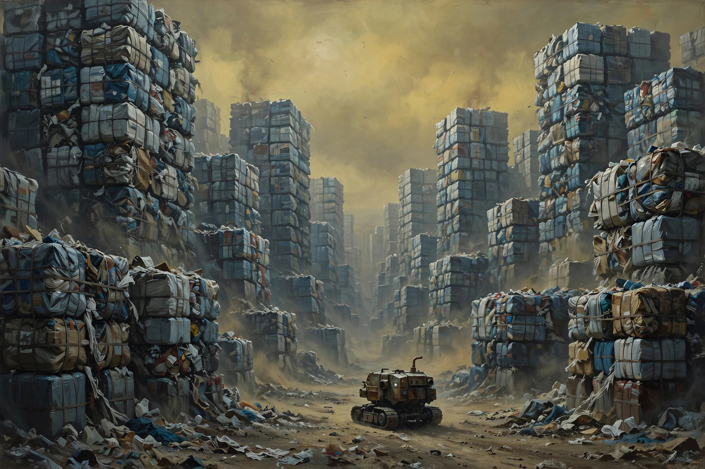
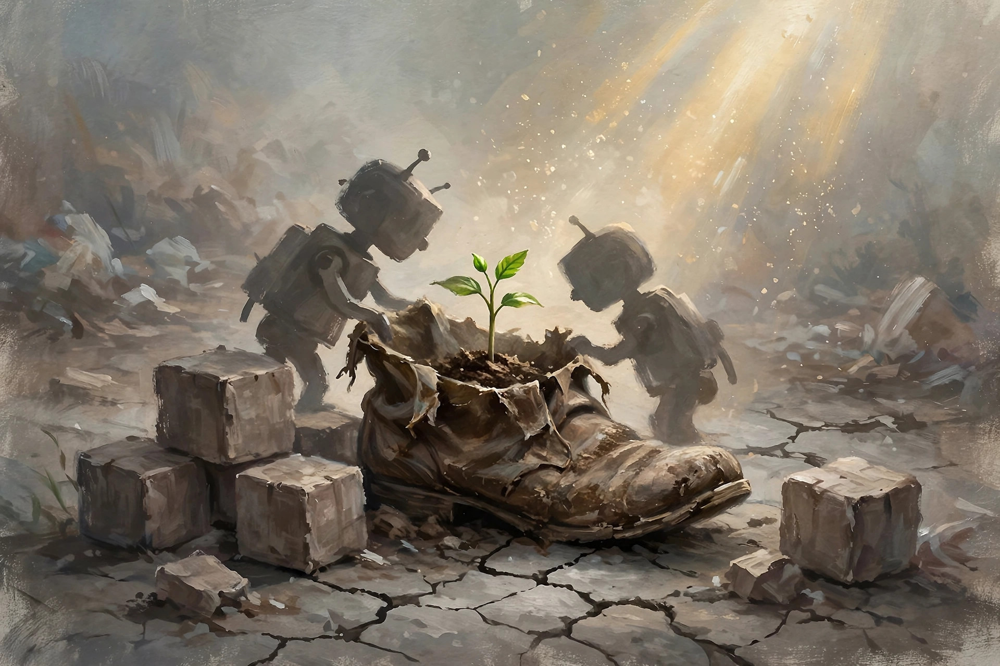

拯救人类还得靠硅基生命，至少人家懂得珍惜当下不瞎折腾
欢迎点击上方名片关注我。您的支持是我坚持原创的最大动力。
上周去重温了代表皮克斯动画巅峰水准的经典佳片《机器人总动员》。记得多年前我还是在电脑上看的这部电影，当时多愁善感的我还感动的稀里哗啦的。时隔多年后走进电影院去重温，用一句烂俗的话说就是，这是我欠皮克斯的一张电影票。
理论上，在电影院看一部电影沉浸感更强，体验也更深刻。但没想到我满怀期待在电影院二刷小机器人瓦力后内心居然毫无波澜。完全没了当初的感动，虽然还是有所收获，悟到更多东西（爱情之外的环保题材），也注意到了片尾远古壁画致敬人类文明的巧思。
我后来一直在想这种感受上的巨大差异是怎么造成的。影片的优秀是毋庸置疑的，长期在豆瓣250中名列前茅（目前排名16）。客观来说影片的优点也很明显：用较小的体量（一个半小时）讲了一个内涵丰富而深刻的故事。故事里有对美好爱情的歌颂（瓦力和伊娃），有对人类未来命运的反乌托邦预言（人类因为自己的贪婪亲手毁掉唯一的家园），也有对人类愚蠢行为（无止境的消费主义）的反思。可谓集娱乐、思辨和批判为一体，各个维度都很出色。
那么问题来了，我为什么没有了当初一刷时的感动和震撼了呢？观影感受这个东西非常个人，我只能说这是我的感受（也许有人三刷四刷还是感动也未可知）。我自己分析了下，年龄和阅历的差异可能是最主要的原因。
当年一刷时我已经是社会人，也成了家，但仍然有颗“文艺青年”的心，对纯真的爱情故事总会带着些许柔光滤镜去看待的。当时看完影片印象最深刻的只是伊娃完成预定任务突然待机后，瓦力想尽办法给她充电，对她各种呵护照顾的桥段。而二刷时，我印象更深刻地却是：瓦力误打误撞混入邪恶的BNL公司空间站，然后和伊娃携手打败邪恶AI，帮助人类重返家园，重建文明。
就像看一本经典名著一样。第一次看你会惊艳，甚至大呼过瘾。第二遍第三遍甚至更多遍重温，你仍然能感受这部作品的伟大。只是时过境迁，你的主观感受也趋于平淡。但这并不影响这部作品的客观价值。
说了半天感觉跟没说一样，哈哈。其实真实原因很简单，不过是中登变成老登，丢掉了很多激情、保留了更多理性罢了。
还是不如来聊聊二刷的一些新发现和新感受吧。影片里那个邪恶的包揽人类一切（也最终毁掉人类家园）的buy and large（BNL）公司，虽然是夸张的艺术虚构，但还是映射了部分社会现实。不知现实中会不会有一家公司会照这个模式演变，通过不断地扩大规模、扩大影响力，最终成为取代国家、国际组织形态以至于接管全人类命运的恐怖存在。其实随着资本的日益集中，这种可能性越来越大。想想当今世界的一些巨无霸企业，市值动辄数万亿美元。相应地，甚至还出现了Elon Musk这样个人身家过万亿的超级富豪。财富如此集中的情况，哪怕是几十年前都是无法想象的。所以，一切皆有可能。
产生buy and large这样的公司不奇怪，奇怪的是这样的公司是怎样做到全面接管全人类命运的。这就不得不提到现实中已经在牵着很多人鼻子走的万恶的消费主义了。就以中国为例，从曾经风靡一时的618、双十一的“人造”购物节，到“爱她就给她买哈根达斯”、“钻石恒久远一颗永流传”之类的煽情广告语，再到“秋天的第一杯奶茶”等莫名其妙火起来的营销话术，商家为了让消费者掏光口袋里的最后一个子可谓殚精竭虑、无所不用其极。
影片中的BNL公司无非是消费主义泛滥的极端后果而已。人们不停买买买，BNL公司越做越大，渐渐接管了人们的衣食住行外加各类精神需求。购物的方便性已经不满足于足不出户，而是让你坐着甚至躺着不动，只需一个按钮（甚至都不需要按钮），你需要的东西顷刻就来到眼前。于是，人们不再需要出门，每个人都成了大腹便便、行动不便的胖子。更糟糕的是，由于过度消费，也产生了过多的垃圾。最初，还能用填埋再循环处理一部分垃圾。但久而久之，垃圾的处理能力远远跟不上垃圾的制造速度。

最终，我们看到了影片开始时令人震惊的一幕：曾经如蓝宝石一般的地球上看不到一丁点绿色，漫天的黄沙，地面上全是被厚厚的黄土覆盖的高楼。在高楼的间隙，密密麻麻的堆积着高耸入云的垃圾山。讽刺的是，镜头拉近垃圾山看到的是切割压缩成方块的垃圾，整齐地一层层码放着。而完成这一壮举的就是BNL公司生产的无数个瓦力那样的垃圾处理机器人。但影片开始时，瓦力已经是最后一个还在服役的垃圾机器人。而地球已经成了一个毫无生机、被文明抛弃的星球。留下的这些废弃的建筑和垃圾山，只是人类曾经在这里生活过的遥远印迹。
说到这里，我大概猜到这部电影为什么那么成功了。最主要的原因是它给了不同年龄、阅历的观众层次丰富的观影感悟和体验。当你年富力强、对未来生活充满希望和向往时，你从影片中看到的是家园虽灭，爱情不死。从两个小机器人的卿卿我我中，从贯穿全片的旧日情歌中，我们在一颗荒芜死寂的星球上看到了一丝希望的火花，正如被伊娃发现的那株小绿苗一样。如果你经历了一些岁月沧桑，看到的则可能是，我们曾经拥有那么美好的家园和生活，可惜我们不懂得珍惜。结果就是我们不得不孤零零地在宇宙的某个冰冷的角落流浪，还用美丽而虚幻的泡沫麻醉自己。
与其失去了再去珍惜，不如感恩、珍惜当下的美好吧。如果一部电影能给我们带来这样的认识，不管几刷都是值得的。
